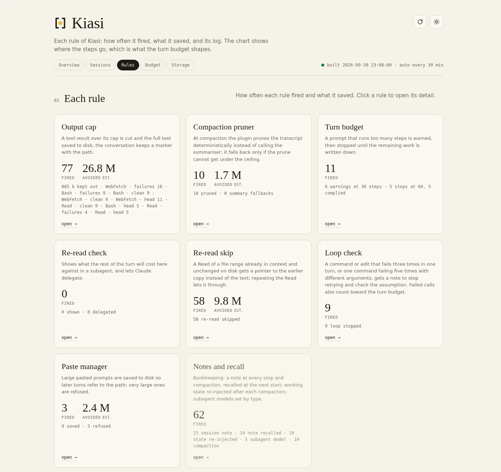
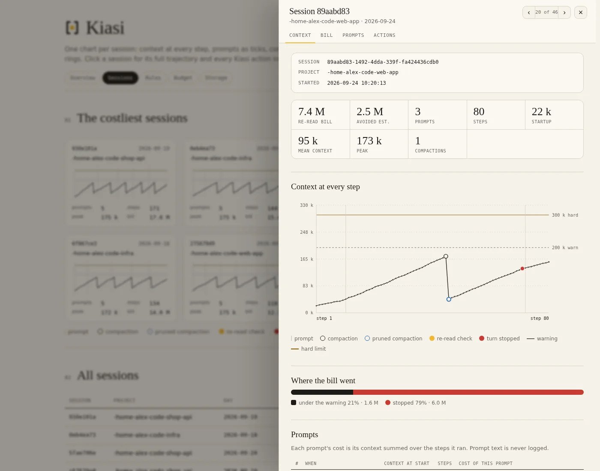

Make your Claude Code weekly limit last longer.
Kiasi caps huge tool outputs, stops runaway turns, refuses mega-pastes, prunes the transcript at compaction, and shows you exactly what it saved. Fixed rules, no model calls, nothing sent anywhere.
> /plugin marketplace add raj-rangani/kiasi
> /plugin install kiasi@kiasi
Why
You pay for context × steps.
Every step in Claude Code re-sends the whole conversation. One 40k-token log read early in a turn is paid for again on every step after it. Kiasi keeps both numbers small, so the same weekly limit covers more work.
Big outputs are cut to what matters, with the full text saved to disk, and the transcript is pruned at compaction.
Turns get a budget, retry loops are called out, and unchanged files aren't read twice.
A local dashboard counts every action and the re-read tokens it kept off your limit.
What it does
Twelve rules, all deterministic.
Each rule runs as a Claude Code hook. There are no model calls and no dependencies beyond Python's standard library. Every threshold is a named constant you can change.
Output cap
Web results, log, transcript and /tmp reads, and bulk command output over 12,000 chars are cut. The full text is saved and a [kiasi kept …] marker says where.
Output cleaning
Build, install, test and search output loses colour codes, progress-bar redraws and repeated lines. File-reading commands are never touched.
Turn budget
A turn is warned at 30 tool calls (or 4M re-read tokens) and stopped at 60 (or 8M). Claude writes the remaining work as a checklist.
Loop check
The same call failing 3 times, or one command failing 5 times with different arguments, tells Claude to stop retrying and check its assumption.
Re-read skip
Reading a file range that's already in context and unchanged on disk returns a pointer to the earlier copy instead of the text.
Paste manager
Prompts over 4,000 chars are saved to disk. Prompts over 40,000 chars are refused, saved, and you're asked to resend the instruction with the path.
Compaction prunerexperimental
Replaces the model-written summary with a rule-based prune: your prompts and Claude's replies stay word for word, old tool output is cut to its head.
State after compaction
Re-injects the task, edited files, commands still failing, saved outputs and checklists, read from the transcript.
Notes and recall
A note is written at every stop and compaction, and injected at the next session start for that project.
Subagent policy
Sets a default model per subagent type and adds a step budget to every subagent brief.
Context rules
Working rules (one task per session, no polling, read files by section) are injected at session start. Nothing to paste into CLAUDE.md.
Searchexperimental
mcp__kiasi__search does full-text search over everything Kiasi saved: outputs, pastes, notes and checkpoints.
Dashboard
See exactly what it saved.
/kiasi:dashboard starts a small local server on 127.0.0.1 and prints its URL. Reports rebuild every 30 minutes, or right away with the Sync button or /kiasi:sync. Figures marked "est." come from a formula; hover them to see it.
- Overview · before and after
- Sessions · every step
- Rules · what fired
- Budget · where the limit goes
- Storage · what's on disk


Install
Four steps, about a minute.
Install the plugin
In Claude Code:
/plugin marketplace add raj-rangani/kiasi /plugin install kiasi@kiasiAdd two settings
A plugin can't set your environment, so add these to the
envblock of~/.claude/settings.json. Kiasi works without them, just less effectively, and reminds you at session start if either is missing.{ "env": { "CLAUDE_CODE_AUTO_COMPACT_WINDOW": "200000", "CLAUDE_CODE_ENABLE_FUNCTION_HOOKS": "1" } }The first caps the context window so compaction happens before the re-read bill grows large. It's the single biggest lever: on the machine Kiasi was built on, it took mean context from about 250k to 57k tokens. The second turns on the experimental compaction pruner and search tool.
Set up plan limits
Restart Claude Code, then run
/kiasi:limits setup. The status line is the only place Claude Code exposes your 5-hour and weekly limits. A status line you already have keeps running, with Kiasi's part added after it.Work as usual
After a session or two, run
/kiasi:dashboardand open the URL it prints.
Privacy
Everything stays on your machine.
Kiasi reads the transcript files under ~/.claude/projects, your own conversation history, to compute context size, steps per prompt and the reports.
It makes no network calls of any kind, never logs prompt text, and writes only to its own data directory.
- The dashboard listens on 127.0.0.1 only.
- It refuses requests addressed to any other host name.
- It rebuilds reports only when asked from its own pages.
- Old saved files are cleaned up automatically, and only files Kiasi wrote.
Reference
Commands and settings.
| Command | What it does |
|---|---|
/kiasi:dashboard | Start the dashboard and print its URL |
/kiasi:sync | Rebuild the reports now |
/kiasi:limits setup | Install the Kiasi status line, the only source of your plan limits |
/kiasi:limits remove | Put your previous status line back |
/kiasi:limits | Show whether the status line is set up and when limits were last saved |
Configuration
Set these with /config, or as env vars. Every other threshold is a named constant in scripts/constants.py or hooks/constants.js.
| Setting | Env var | Default |
|---|---|---|
output_cap_chars | CLAUDE_PLUGIN_OPTION_OUTPUT_CAP_CHARS | 12000 |
turn_call_budget | CLAUDE_PLUGIN_OPTION_TURN_CALL_BUDGET | 60 |
paste_refusal_chars | CLAUDE_PLUGIN_OPTION_PASTE_REFUSAL_CHARS | 40000 |
compaction_window_text | CLAUDE_PLUGIN_OPTION_COMPACTION_WINDOW_TEXT | "200000" |
Data directory
All state (event log, saved pastes, outputs, notes and checkpoints, session records, gzipped report JSON, sync status) goes to ${CLAUDE_PLUGIN_DATA}, a path Claude Code exports to every hook process, normally under ~/.claude/plugins/data/. Scripts run by hand (the dashboard, sync.py, search.py) follow a pointer the session-start hook leaves in ~/.claude/kiasi/, so they read the same directory. Nothing is ever written under the installed plugin code.
Cleanup
A saved output, checkpoint, paste or session record only matters to the session that made it. So scripts/cleanup.py moves such a file, gzipped, to trash/ once the file and its session have both been unused for 7 days (pastes: 14). Trash is deleted 7 days later. It runs in the background at session start and on sync, at most once a day. It:
- touches only file names Kiasi itself writes, never through a symlink;
- never touches the running session or anything used in the last 24 hours;
- removes a notes file only when its newest entry is over 30 days old, and never rewrites the event log;
- only reports, moving nothing, for the first 7 days (the Storage tab shows what it would move);
- empties trash oldest first above 50 MB, then only warns;
- logs every move, delete and restore to
cleanup.jsonl.
python3 scripts/cleanup.py --dry-run lists what would move, and --restore puts trashed files back. Set KIASI_CLEANUP to report, trash or off to override the default auto.
Plan limits and the status line
/kiasi:limits setup copies scripts/statusline.py to ~/.claude/kiasi/ and points statusLine in ~/.claude/settings.json at it, backing the file up once to settings.json.kiasi-bak. A status line you already had keeps running, with the Kiasi part added after it. Run setup again after a plugin update to refresh the copy.
Keeping the dashboard up
To keep the dashboard running on Linux, use a systemd user unit with ExecStart=/usr/bin/python3 <plugin root>/scripts/dashboard.py 8787 and Restart=always, enabled with systemctl --user enable --now. Then bookmark http://127.0.0.1:8787/.
Experimental: function hooks
The compaction pruner and mcp__kiasi__search use Claude Code's function-hook API, which is early access (2.1.282+) and may break on an engine update. After upgrading Claude Code, check the debug log for "hooks module ... loaded". Kiasi is fully useful without it: the seven classic hooks run regardless of CLAUDE_CODE_ENABLE_FUNCTION_HOOKS.
Requirements
- Claude Code 2.1.283+
- Python 3.8+, standard library only (tested on 3.10 and 3.11)
- Linux (tested) or macOS (expected to work, not yet tested). Windows isn't supported: cleanup uses
fcntl. - Node 18+ only for the experimental function hooks
Development
python3 -m unittest discover -s tests # hook handlers, reports, dashboard (runs in CI)
claude plugin test . # hooks/*.test.ts on the real engine
claude plugin validate . # marketplace, manifest and hooks.json
npx -p typescript tsc --noEmit -p . # type-check the hooks module (local only)The type-check needs .claude-plugin/types/, which Claude Code writes the first time it loads the plugin from a folder (claude --plugin-dir /path/to/kiasi). It's early-access API and not committed, so the type-check runs locally only.
Uninstall
Run /kiasi:limits remove if you set up the status line, then /plugin uninstall kiasi. Claude Code deletes ${CLAUDE_PLUGIN_DATA} when the plugin is uninstalled from its last install location; pass --keep-data to keep it. ~/.claude/kiasi/ is never removed automatically; delete it yourself if you want it gone.